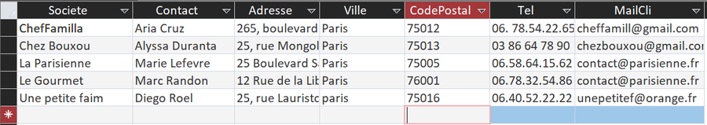
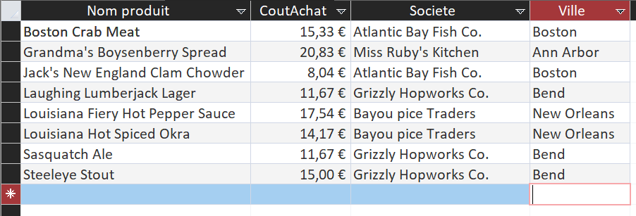
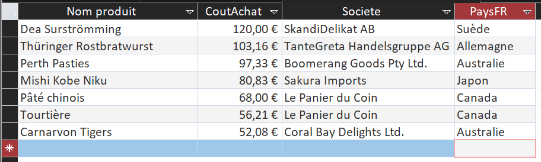
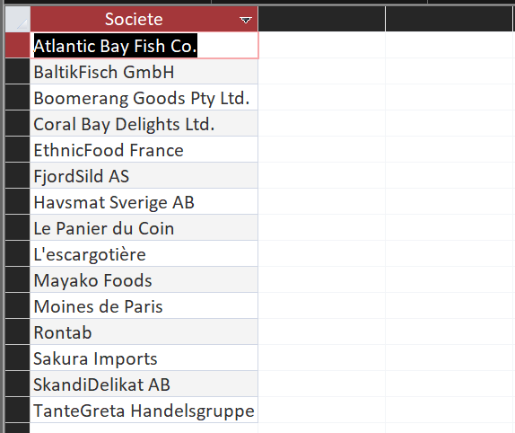
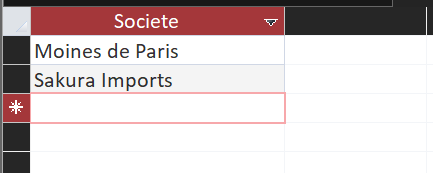
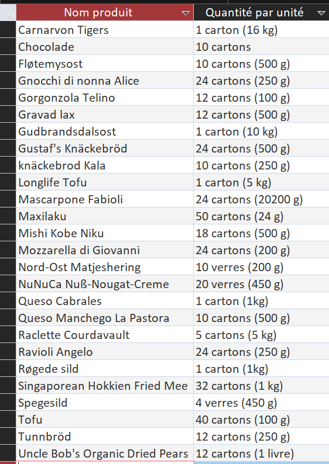
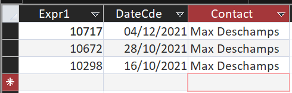
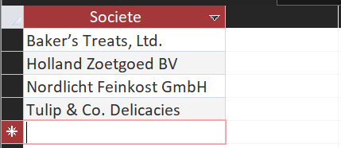
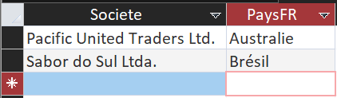
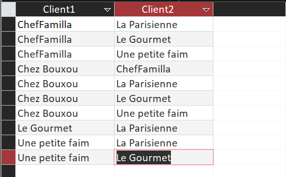

Dix requêtes pour comprendre les clients, les produits et les fournisseurs de KDou.
Dix questions pour explorer les clients, les produits et les fournisseurs. Chaque requête est écrite en SQL
Access, avec sa construction, son résultat et un commentaire.
Clients parisiens
Énoncé : Vérifier les coordonnées des clients parisiens, triées par société.
Construction : FROM Clientele ; WHERE ville = Paris ; ORDER BY société.
SELECT Societe, Contact, Adresse, Ville, CodePostal, Tel, MailCli
FROM Clientele
WHERE Ville = "Paris"
ORDER BY Societe;

Coordonnées des clients parisiens, triées par société.
Remarque : Access ne tient pas compte de la casse : « paris » écrit en minuscules est
retrouvé par = "Paris". Anomalie : « Le Gourmet » a le code postal 76001, qui ne correspond pas à Paris.
Produits américains à moins de 25 €
Énoncé : Donner nom, prix, fournisseur et ville des produits venant des États-Unis avec
un coût inférieur à 25 €.
Construction : FROM : Produit, Fournisseur, Pays ; WHERE : pays = Etats-Unis et coût
< 25 ; ORDER BY nom du produit.
SELECT P.NomProd, P.CoutAchat, F.Societe, F.Ville
FROM (Produit AS P INNER JOIN Fournisseur AS F ON P.NoFour = F.NoFour)
INNER JOIN Pays AS Pa ON F.NoPays = Pa.NoPays
WHERE Pa.PaysFR = "Etats-Unis" AND P.CoutAchat < 25
ORDER BY P.NomProd;

Produits des États-Unis avec un coût d’achat inférieur à 25 €.
Remarque : Le prix affiché est le coût d’achat. Le prix de vente s’en déduit : coût
d’achat × coefficient de marge de la catégorie.
Viandes ou poissons à plus de 50 €
Énoncé : Lister les produits des catégories viandes ou poissons dont le coût d’achat
dépasse 50 €, avec fournisseur et pays.
Construction : FROM : Produit, Categorie, Fournisseur, Pays ; WHERE : catégorie (deux
valeurs avec OR) et coût > 50 ; ORDER BY coût décroissant.
SELECT P.NomProd, P.CoutAchat, F.Societe, Pa.PaysFR
FROM ((Produit AS P INNER JOIN Categorie AS Ca ON P.CodeCateg = Ca.CodeCateg)
INNER JOIN Fournisseur AS F ON P.NoFour = F.NoFour)
INNER JOIN Pays AS Pa ON F.NoPays = Pa.NoPays
WHERE (Ca.NomCateg = "Viandes" OR Ca.NomCateg = "Poissons et fruits de mer")
AND P.CoutAchat > 50
ORDER BY P.CoutAchat DESC;

Produits viandes ou poissons à plus de 50 €, avec fournisseur et pays.
Remarque : La catégorie des poissons s’appelle « Poissons et fruits de mer » dans la
table Categorie.
Fournisseurs de viande ou de poisson
Énoncé : Quels fournisseurs proposent de la viande ou du poisson ?
Construction : FROM : Fournisseur, Produit, Categorie ; WHERE : l’une des deux
catégories ; DISTINCT car un fournisseur apparaît une fois par produit.
SELECT DISTINCT F.Societe
FROM (Fournisseur AS F INNER JOIN Produit AS P ON F.NoFour = P.NoFour)
INNER JOIN Categorie AS Ca ON P.CodeCateg = Ca.CodeCateg
WHERE Ca.NomCateg = "Viandes" OR Ca.NomCateg = "Poissons et fruits de mer"
ORDER BY F.Societe;

Fournisseurs qui proposent de la viande ou du poisson.
Remarque : Quinze fournisseurs sont concernés. DISTINCT supprime les répétitions sans
intérêt.
Fournisseurs de viande et de poisson
Énoncé : Quels fournisseurs proposent à la fois de la viande et du poisson ?
Construction : Intersection écrite avec deux sous-requêtes IN reliées par AND.
SELECT F.Societe
FROM Fournisseur AS F
WHERE F.NoFour IN (SELECT P.NoFour
FROM Produit AS P INNER JOIN Categorie AS Ca ON P.CodeCateg = Ca.CodeCateg
WHERE Ca.NomCateg = "Viandes")
AND F.NoFour IN (SELECT P.NoFour
FROM Produit AS P INNER JOIN Categorie AS Ca ON P.CodeCateg = Ca.CodeCateg
WHERE Ca.NomCateg = "Poissons et fruits de mer")
ORDER BY F.Societe;

Fournisseurs qui proposent à la fois de la viande et du poisson.
Remarque : Un produit n’a qu’une catégorie : un simple AND sur la jointure renverrait 0
ligne. Access ne gère pas INTERSECT, d’où les deux sous-requêtes IN.
Produits en carton ou en verre
Énoncé : Quels produits sont conditionnés dans du carton ou dans du verre ?
Construction : FROM Produit ; WHERE : LIKE avec jokers * sur le texte QteParUnit ; ORDER
BY nom.
SELECT NomProd, QteParUnit
FROM Produit
WHERE QteParUnit LIKE "*carton*" OR QteParUnit LIKE "*verre*"
ORDER BY NomProd;

Produits conditionnés dans du carton ou du verre.
Remarque : Le conditionnement est un texte libre (QteParUnit). Le joker * trouve « verre
» et « verres ». Les bouteilles ne sont pas comptées comme du verre.
Dernières commandes de Max Deschamps
Énoncé : Donner les trois dernières commandes du client dont le contact est Max
Deschamps.
Construction : FROM : Clientele, Commande ; WHERE : contact ; ORDER BY date décroissante
puis numéro décroissant ; TOP 3.
SELECT TOP 3 Co.[N° commande] AS NumCommande, Co.DateCde, Cl.Contact
FROM Clientele AS Cl INNER JOIN Commande AS Co ON Cl.CodeCli = Co.CodeCli
WHERE Cl.Contact = "Max Deschamps"
ORDER BY Co.DateCde DESC, Co.[N° commande] DESC;

Les trois dernières commandes de Max Deschamps.
Remarque : Max Deschamps est le contact du client ANCBE. Le tri sur le numéro départage
deux commandes de même date.
Fournisseurs de desserts uniquement
Énoncé : Quels fournisseurs ne proposent que des desserts ?
Construction : Différence : IN (au moins un dessert) et NOT IN (aucun produit d’une
autre catégorie).
SELECT F.Societe
FROM Fournisseur AS F
WHERE F.NoFour IN (SELECT P.NoFour
FROM Produit AS P INNER JOIN Categorie AS Ca ON P.CodeCateg = Ca.CodeCateg
WHERE Ca.NomCateg = "Desserts")
AND F.NoFour NOT IN (SELECT P.NoFour
FROM Produit AS P INNER JOIN Categorie AS Ca ON P.CodeCateg = Ca.CodeCateg
WHERE Ca.NomCateg <> "Desserts")
ORDER BY F.Societe;

Fournisseurs qui ne proposent que des desserts.
Remarque : Sans le premier IN, on récupérerait aussi les fournisseurs sans aucun
produit.
Fournisseurs étrangers sans produit
Énoncé : Quels fournisseurs hors France n’ont aucun produit au catalogue ?
Construction : Jointure externe gauche Fournisseur → Produit ; WHERE : pays ≠ France et
RefProd vide (IS NULL).
SELECT F.Societe, Pa.PaysFR
FROM (Fournisseur AS F INNER JOIN Pays AS Pa ON F.NoPays = Pa.NoPays)
LEFT JOIN Produit AS P ON F.NoFour = P.NoFour
WHERE Pa.PaysFR <> "France" AND P.RefProd IS NULL
ORDER BY Pa.PaysFR, F.Societe;

Fournisseurs hors France sans produit au catalogue.
Remarque : Un fournisseur sans produit a un RefProd vide après la jointure externe.
Couples de clients parisiens
Énoncé : Quels couples de clients sont situés à Paris, pour optimiser les livraisons ?
Construction : Auto-jointure de Clientele ; la condition C1.CodeCli < C2.CodeCli
évite les couples (X, X) et les doublons (X, Y) / (Y, X).
SELECT C1.Societe AS Client1, C2.Societe AS Client2
FROM Clientele AS C1 INNER JOIN Clientele AS C2 ON C1.CodeCli < C2.CodeCli
WHERE C1.Ville = "Paris" AND C2.Ville = "Paris"
ORDER BY C1.Societe, C2.Societe;

Couples de clients situés à Paris.
Remarque : Dix couples sont possibles. Ils indiquent des clients proches qui pourraient
partager une livraison.